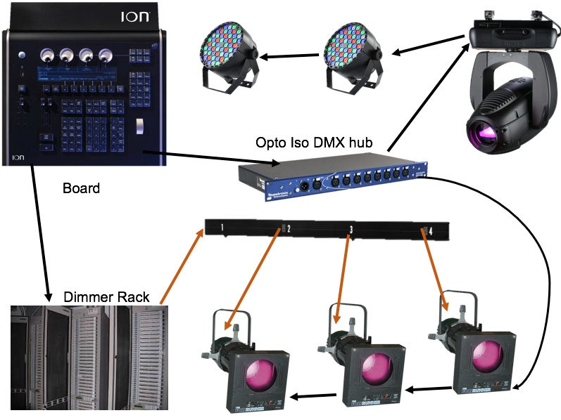

Welcome to Dan Gude's Lit Lighting. This website is aimed towards people with little or no experience in stage lighting. There are links to diffrent aspects with information about each. To be successful when working with lighting it is imperative to have an understanding of all the diffrent components it is comprised of.
The beginning of lighting control starts at the Board. Data is sent through 5 pin DMX cables to a dimmer rack and or DMX hubs. A dimmer rack interprets the data and gives power to specified circuits. A light that is being powered from that specified circuit will be powered. Diffrent level of intensity can be specified from the board to allow for dimming. All circuits also known as dimmers have a number that the dimmer rack associate to each, and this is the number to use on the board. On the board side one or many dimmers also known as addresses can be assigned to a channel. For example, if we assign dimmer 5 to channel 1 and put channel 1 to 50% then the light plugged into to 5 will be at 50% of its max brightness.
In addition, data can be sent to intelligent lighting fixtures. Intelligent lights are anything that is more than only power and will have a DMX port. In order to 'talk' to the fixture you must address it at a single number first on the fixture itself. From consol to consol, they will hangle intelligent fixtures differently. Each attribute of the intelligent fixture can be accessed by addresses in a similar fashion. Newer boards are able to keep one fixture to one channel using newer software, but in order to access each attribute on an older board you would have to use multiple channels. For example, let us use a mover with the paramaters of intensity, red, green, blue, pan, and tilt. We are going to address it at address 11. Back on the board, address 11 will controll the intensity, address 12 controls how red the beam will be, address 13 controls how blue, and it continues until address 16 which controls tilt.
Diagram of how lighting components are connected
